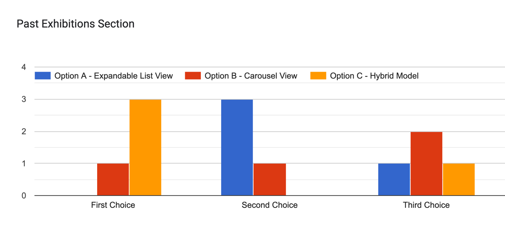
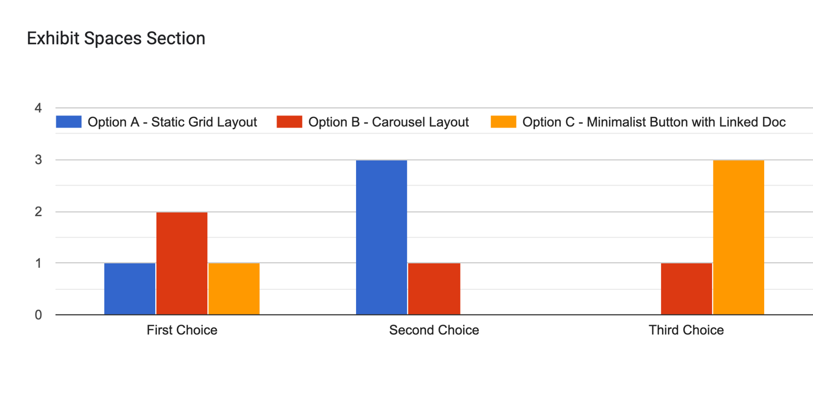
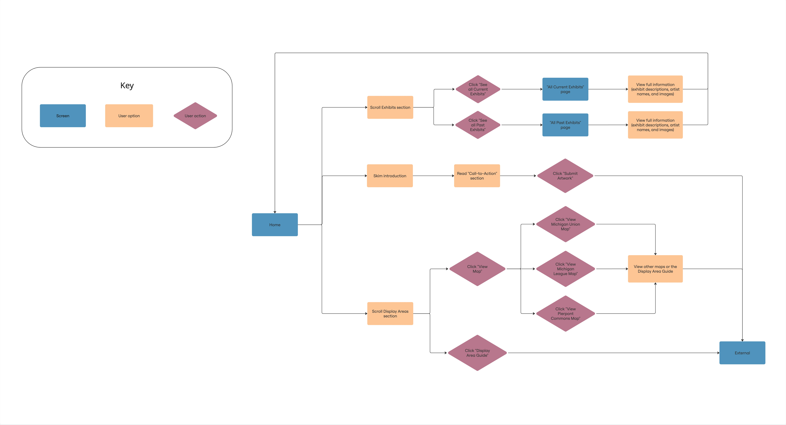
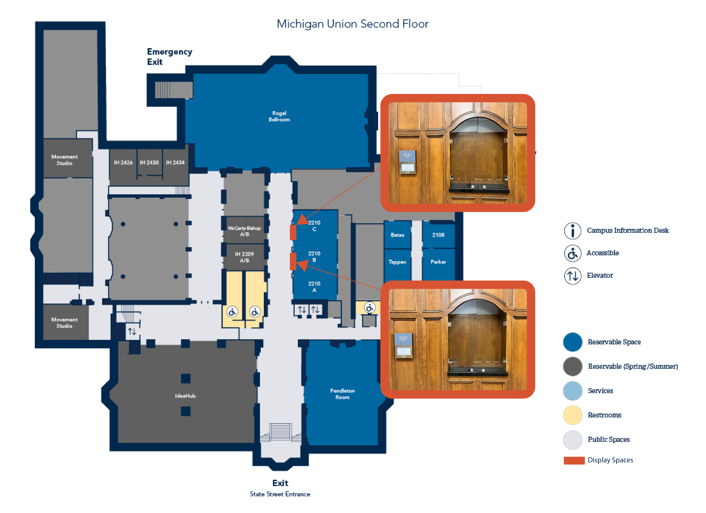

The Problem
Student artists, staff curators, and community partners had no centralized way to understand where, how, or when to exhibit work across three University of Michigan buildings.
The Solution
An integrated service system connecting a redesigned web presence, conditional submission forms, visual exhibition maps, and workflow documentation into one coherent infrastructure.
Who this is for
Three distinct user groups of student artists seeking exhibition space, staff curators managing logistics, and community partners navigating institutional processes each with different needs and levels of digital literacy.
What we learned
Through heuristic evaluation, stakeholder interviews, and on-site audits, we found the core problem was not awareness but fragmentation. No single system connected submission, space planning, and staff workflows.
TL;DR
Service design for a new campus arts initiative spanning web, forms, maps, and institutional workflows
Challenge
No centralized infrastructure existed for artists to discover, apply for, or coordinate exhibition spaces across three University Unions buildings.
Approach
Multi-method research including heuristic evaluation, stakeholder check-ins, on-site audits, and peer institution benchmarking surfaced three clear system priorities.
Solution
A connected system: role-specific web pages, conditional submission forms, annotated exhibition maps, and reusable signage and documentation templates.
Impact
Delivered a scalable foundation for future curation cycles. Exhibition maps, display guide, and web prototype adopted by the Arts Initiative team.
Key Design Decisions
Three choices that turned scattered institutional processes into a coherent system.
01
System over screen
The real problem was not a bad webpage but a fragmented process. Designing the submission form, exhibition maps, and web presence as a connected system meant each piece reinforced the others rather than existing in isolation.
02
Role-specific conditional logic
The submission form split internal and external user paths using conditional logic, reducing cognitive load for artists while improving administrative efficiency for staff. One form, two very different experiences.
03
Documentation as design
Exhibition maps annotated with size, lighting, and usage conditions; archived installation records; reusable signage templates. All designed so future coordinators could maintain the system without starting from scratch.
Four research methods surfaced three system-level priorities before any design work began.
Audited the existing submission form and Unions web structure for usability gaps and information architecture issues.
Ongoing conversations with Senior Associate Directors and Program Staff to surface institutional goals, constraints, and unspoken workflows.
Physical audits of all three buildings to document space logistics, plus comparative analysis of peer institution galleries.
Submission flows through role-specific guidance
Physical spaces to improve pre-installation planning and decision-making
Documentation, signage, and rotation strategy for institutional continuity



Three parallel workstreams, designed to reinforce each other.
Prototyped a dedicated "Arts at the Unions" webpage aligned with the uunions.umich.edu information architecture. Iterated three versions, ran a stakeholder survey to finalize layout, and presented in a formal proposal with layout logic and implementation notes. Rebuilt the submission form with conditional logic separating internal and external user paths.
Created site-specific visual maps for all three buildings, annotated with size, lighting, and usage conditions. Proposed a modular signage and rotation strategy for recurring programs like BHM and Women's History Month. Archived past installations with photo documentation for future curation records.
Coordinated department-specific SignNow setup for digital art loan agreements. Assisted in live exhibition installs, identifying friction points in the physical handoff process.

Reusable artifacts designed so future coordinators can run the system without me.




All connected. Designing one without the others creates friction downstream.
Changes took many rounds because buy-in wasn't established upfront.
Tools can apply across any institutional or service design context.